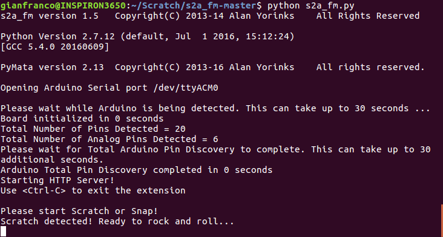
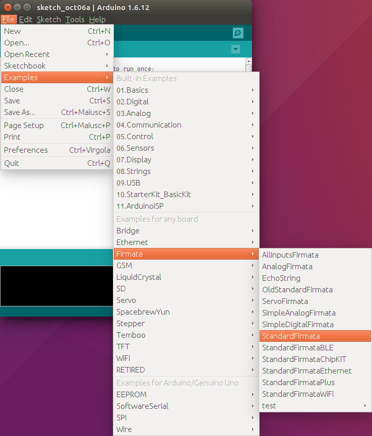
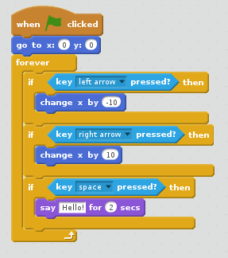
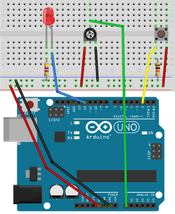
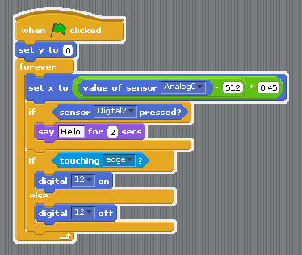
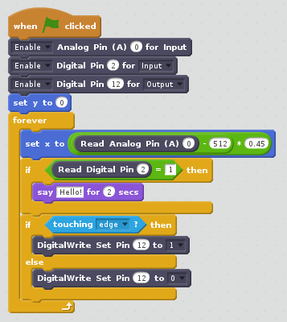
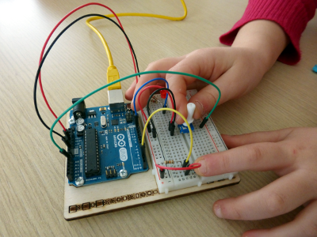
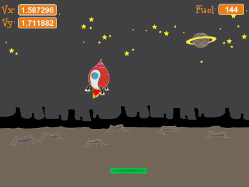

risorse | scratch con arduino
Attenzione: ho posto la massima cura ed attenzione nel redigere questi appunti; declino tuttavia ogni responsabilità per eventuali imprecisioni, errori od omissioni, così come declino ogni responsabilità per eventuali danni a cose, proprietà o persone derivanti dall'uso di questi contenuti.
Il binomio Scratch/Arduino offre la possibilità di accedere alle porte di ingresso/uscita di una scheda Arduino dall’ambiente di programmazione Scratch. L’obiettivo non è programmare Arduino con Scratch, ma “connettere” Scratch al mondo reale attraverso Arduino. In questo senso, si parla anche di estensioni hardware di Scratch. Stando a quanto offre la rete, le soluzioni più utilizzate sono due, S4A e S2A_fm.
Tutti gli esperimenti sono stati condotti su Xubuntu 14.04. S2A_fm è stato utilizzato con successo anche su Ubuntu 16.04 a 64 bit.
S4A è una versione modificata dell’ambiente 1.4 di Scratch. La versione provata è la 1.5, che può essere installata attraverso l’Ubuntu Software Center, oppure scaricando il package debian all’indirizzo http://vps34736.ovh.net/S4A/S4A15.deb. Una volta scaricato, l’installazione avviene da terminale con la linea di comando:
sudo dpkg -i S4A15.deb
S4A convive senza problemi con un’installazione di Scratch 2.0. Per quanto concerne la compatibilità con le versioni ufficiali di Scratch, S4A carica correttamente i progetti Scratch 1.4; i progetti salvati con S4A non sono invece riconosciuti da nessuna versione Scratch — non c’è retro-compatibilità.
S4A consente l’accesso ad un sotto-insieme delle porte di Arduino, nella fattispecie:
S4A è in grado di gestire tante schede Arduino quante sono le porte USB installate sul PC. L’accesso alle porte di ingresso/uscita di Arduino avviene per mezzo di una tipologia speciale di sprite, i cosiddetti Arduino sprite. Rispetto agli sprite convenzionali (comunque disponibili), gli sprite Arduino offrono una serie di comandi “extra” nell’area Motion/Movimento:
Affinché la comunicazione possa avere luogo, è necessario installare su Arduino un firmware apposito, che non è distribuito assieme all’applicazione, ma che è reperibile all’indirizzo http://vps34736.ovh.net/S4A/S4AFirmware15.ino. Lo sketch va compilato e caricato all’interno della scheda, secondo le solite modalità:
Durante l’esecuzione di un programma, Scratch imposta i valori delle porte d’uscita della scheda Arduino e acquisisce lo stato delle porte d’ingresso a ciclo continuo, ogni 75ms, cioè all’incirca 13 volte al secondo.
S4A si basa sul Remote Sensor Protocol di Scratch, dichiarato obsoleto.
S2A_fm si integra con un’installazione esistente di Scratch 2.0: si tratta dunque di un’estensione, non di un ambiente Scratch alternativo. È sviluppato in Python. Oltre al run-time del linguaggio (di cui è richiesta la versione 2.7 o superiore), necessita di alcune librerie aggiuntive, che nella configurazione minima risultano essere PySerial e PyMata, entrambe installabili tramite pip:
sudo pip install PySerial sudo pip install PyMata
La versione dell’estensione in prova è la 1.5, ed è ottenibile clonando o scaricando il repository git del progetto all’indirizzo https://github.com/MrYsLab/s2a_fm in una cartella locale.
L’uso dell’estensione richiede l’avvio di un servizio apposito, che può essere effettuato in modalità manuale direttamente dalla riga di comando. È sufficiente aprire una finestra di terminale, portarsi nella cartella di principale di S2A_fm, e dare il comando:
python s2a_fm.py /dev/ttyACM0
dove /dev/ttyACM0 rappresenta la porta seriale cui è connesso il cavo USB della scheda Arduino. Una volta che il server è partito, attendere l’apparizione del messaggio «Please start Scratch or Snap!» prima di avviare Scratch.
Dall’ambiente Scratch, aprire il progetto s2a_fm_base.sb2, distribuito assieme all’estensione. Alternativamente, aprire il file di definizione dell’estensione s2a_fm.s2e presente nella cartella ScratchFiles/ExtensionDescriptors — o una delle sue versioni localizzate — con il comando Import Experimental HTTP Extension del menu File (aprire il menu tenendo premuto il tasto Shift). Si ottiene così l’accesso alle funzionalità Arduino, grazie ai blocchi dell’area More Blocks/Altri Blocchi:
Subito dopo l’avvio di Scratch, verificare la presenza del messaggio «Scratch detected! Ready to rock and roll...» nel terminale, a conferma del fatto che il server ha “agganciato” Scratch.
Il server notifica l'avvenuta connessione con Scratch.
Anche S2A_fm richiede l’installazione del firmware StandardFirmata, incluso nell’ambiente di sviluppo di Arduino (menu File > Examples > Firmata > StandardFirmata).
Il comando per caricare il firmata.
Durante l’esecuzione di un programma, Scratch interroga il server S2A_fm utilizzando il protocollo HTTP. Il server si occupa di trasformare tali richieste nel formato Firmata riconosciuto da Arduino.
L’arresto del server S2A_fm, che deve avvenire dopo la chiusura di Scratch, si ottiene premendo la combinazione di tasti Ctrl+C nella finestra del terminale.
Come banco di prova ho usato un progetto minimale che consente di spostare uno sprite a destra e a sinistra con i tasti cursore; la pressione del tasto spazio fa apparire un fumetto:
Il progetto iniziale, che fa uso della tastiera del PC.
L’idea è di comandare lo spostamento dello sprite con un potenziometro, e di usare un pulsante per far apparire il fumetto. In aggiunta, un LED rosso segnala che lo sprite ha raggiunto il bordo dell’area di gioco. La circuiteria è essenziale: un potenziometro lineare da 10KΩ è connesso all’ingresso analogico A0, un pulsante all’ingresso digitale D2 – con una resistenza di pull-down da 10KΩ –, un LED all’uscita digitale D12, con una resistenza per la limitazione della corrente da 470Ω. Il LED è connesso alla scheda attraverso l’anodo, in modo che si accenda quando l’uscita assume il valore logico 1.
Il cablaggio del circuito di prova.
L’unica particolarità del progetto S4A è la trasformazione lineare usata per passare dalla posizione del cursore del potenziometro, rappresentata da un valore analogico compreso tra 0 e 1023 – la lettura fornita da Arduino – alla corrispondente coordinata x, compresa tra -230 e +230 – posizione che deve essere assunta dallo sprite. Il resto del “codice” è di facile interpretazione:
Il progetto S4A – notare l’ambiente Scratch 1.4.
La peculiarità di questa configurazione è la fitta comunicazione che si instaura tra Scratch e Arduino, che si può desumere dall’ininterrotto lampeggío degli indicatori TX/RX della scheda.
Caricare il firmware S4AFirmware15 sulla scheda prima di avviare il programma.
Il progetto S2A è molto simile a quello S4A; si differenzia da quest’ultimo per l’esplicita configurazione delle porte di ingresso/uscita della scheda Arduino che avviene all’inizio del programma:
Il progetto S2A.
Operando in questa modalità, la quantità di dati trasferita tra Scratch e Arduino è notevolmente ridotta rispetto al caso precedente, come testimonia la minore attività degli indicatori TX/RX.
Caricare il firmware StandardFirmata sulla scheda Arduino e avviare il server s2a_fm prima di aprire Scratch e far partire il programma.
Aggiornamento [13/10/2014]
Dovesse risultare più comodo operare sui controlli dal lato della bread-board, come mostrato nella figura sottostante, è necessario apportare una piccola modifica al progetto, perché in questo caso i comandi di spostamento sono invertiti: ruotando il potenziometro verso sinistra, lo sprite si muove verso destra, ruotandolo verso destra, lo sprite si sposta a sinistra.
Il circuito di comando, utilizzato dal lato della bread-board.
Per ripristinare la direzionalità corretta, si può agire indifferentemente sul programma o sul circuito:
Dalla cablatura in figura, si può desumere che si è optato per modificare il programma, perché l’alimentazione del potenziometro è quella originale.
Aggiornamento [22/01/2015]
Per verificare sul campo il buon funzionamento dell’estensione S2A ho realizzato un piccolo gioco sullo stile di lunar lander: scopo del gioco è far atterrare in assetto verticale il modulo lunare il più dolcemente possibile sul basamento verde. L’interruttore comanda il motore del modulo lunare, mentre il potenziometro controlla l’orientamento del modulo. Il LED si accende quando la quantità di carburante scende sotto una certa soglia.
Scarica llander_s2a.sb2, il progetto per Scratch 2.0 per giocare con il circuito.
Scarica llander.sb2, il progetto per Scratch 2.0 per giocare con la tastiera (usa i tasti cursore destra/sinistra per orientare il modulo lunare, la barra spaziatrice per accendere i motori).
Ho potuto constatare che a volte i controlli non rispondono. Quando ciò accade, il problema si presenta fin dall’avvio della partita e perdura fino all’inevitabile schianto che conclude il gioco. D’altra parte, il verificarsi del problema in una partita non preclude che nella successiva tutto funzioni a dovere. Non sono riuscito a determinare la causa del malfunzionamento: la difficoltà principale sta nel fatto che il problema non è riproducibile sistematicamente.
Aggiornamento [18/03/2015]
La memorizzazione del valore dell’angolazione in una variabile ausiliaria sembra aver risolto il problema!
Scarica llander_s2a_var.sb2, il progetto per Scratch 2.0 per giocare con il circuito.
Allunaggio in corso!
Pagina modificata il 22/01/2015